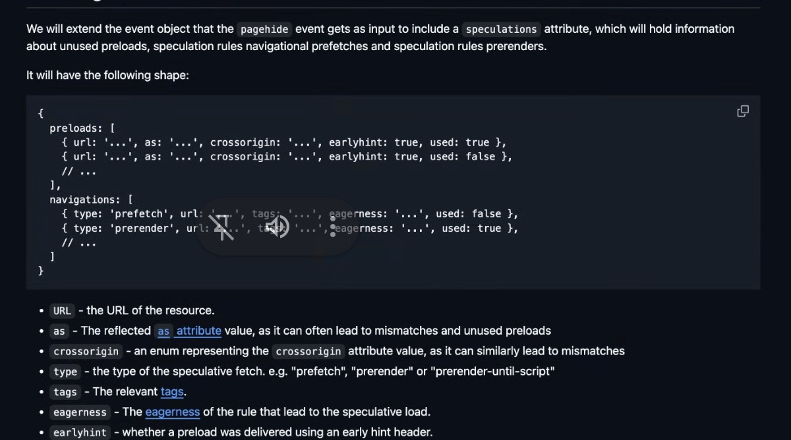

Participants
- Nic Jansma, Yoav Weiss, Carine Bournez, Franco Vieira, Guohui Deng, Johannes Henkel, Marko Llic, Michal Mocny, Noam Helfman, Patrick Meenan, Luis Flores, Leon Brocard, Robert Liu, Scott Haseley, Barry Pollard
Admin
- Next meeting: Mar 12, 2026
- CRA (ETSI EN 304 617)
- EU legislation that calls out some W3C specs, including ones from our specs. (RT, HRTime, NEL, Reporting)
- Unsure how it impacts us, started some conversations on that, looking for guidance
- Carine: PoC is Simone. Driving the response from the W3C in the SecIG. Mostly mentions already-known and solved issues
- Nic: Unclear if this legislation would handcuff our ability to change specs
- Carine: Could be, but doesn’t seem like there’s anything problematic
- Done: RT, NT, HRT, ~PerfTimeline
- Left: rIC, ST, Beacon, UT
- Yoav: We have some specs that are ReSpec-based, newer are Bikeshed, well-known chore to convert from one to the other, to get unity
- … Robots solving this for us
- … Taught Claude to do one, and is now doing others
- … 4 done now, 4 to go
- … Also updated auto-publication scripts
- Luis: Posted explainer scoped to network heuristics specifically
- … Requested WICG adoption
- Michal: ET has had many issues, many tightly coupled
- … Summarized in Github issue
- … Simplifies and re-orders things
- … Shipped EventTiming with interactionId, but there are no tests to measure overlapping events
- … Order those events arrive and which paint they're reported in
- … Becomes important for Long Animation Frames, etc
- … In perfect world all PaintTiming happen in the paint they come together
- … Looking for volunteers for review, and to share opinions
- … If anyone struggled with EventTiming as a stream, this should make it simpler
- … Reason pointerDown is difficult is they could turn into click or scroll
- … We could solve problem of EventTiming measurement and get rid of complexity, all events get interactionId right away
Minutes
- Nic: currently operating under our 2023 charter + extension till June
- … Guides our approach to spec development, deliverables, etc
- … Open PR, tried to document the changes in the PR messages
- … Chair’s proposal, not set in stone
- … First change, want to change the success criteria
- … “all new features should be supported by two intents to implement”
- … we have concerns about the wording - we have features that are intentionally optional and we decided that it’s OK.
- … Other things are proposed. New and experimental features. Based on the charter default template we can’t have those
- … Alternatives are long-standing PRs or other specs monkey-patching our specs
- … We propose to add explicit annotation that indicates the optional or experimental status of these features.
- … Carine mentioned that we can mark those “at risk”
- Carine: The sentence was added to the charter template. It’s about new features introduced in CR. It’s not allowed to introduce those changes in REC. Want to avoid adding features that would never be implemented
- … Makes sense to only something that can add interop
- … If you stay in CR forever, we expect the groups to do these things
- … You only want to introduce things that implementers are on board
- … If you’re not sure, you can mark them at risk. Optionality is not the same thing, and doesn’t change the requirement
- … I suggest that we keep the standard wording in the success criteria
- … Introducing new features is a decision of the group
- Nic: The wording implies a strict requirement. It doesn’t suggest that features can be added with “at risk” status
- … The words “at risk” imply something
- Yoav: Because it's part of success criteria section, this only applies to CR and beyond
- Carine: Only when leaving CR
- … 2026 template is updated slightly
- … "intent to implement" has been replaced by something else, "interest" etc
- Yoav: We can mark these features as "at risk" plus any annotation we like (we could say that in the charter)
- … Multiple types of features at risk: abandoned, only one implementor (for legacy reason), vs. experimentatal thing
- … Very different categories
- … I think makes sense to expand upon
- … I'd like to include in charter as statement of intent, say things are at risk to be compliant with process, but in parallel to work with Process CG to expand "at risk" status to be more meaningful
- Carine: Can be "at risk" for various reasons, up to group. Implementation is the first thing. When removing that feature before going to REC you don't need to get to PR
- … Some groups have been very far in proposing different designs of features and being at risk, I think that's extreme
- … If you think there might be a problem, don't want risk
- Yoav: Even before might be a problem here, contentEncoding is a good example. We have one good implementation, no objections I'm aware of, but they haven't implemented yet. Makes sense to have in RT in spec, tied into Fetch, rather than have a RT Extension incubation.
- … Including in spec makes sense from spec editor and developer perspective
- … Adding an annotation that it's not yet part of RT standard makes sense, "at risk because…"
- Carine: Usually at risk comes with explanation
- Barry: “at risk” means this isn’t fully baked, which is not always the case. E.g. contentEncoding won’t change
- … “at risk” is too strong
- Carine: that’s the Process’ wording. Indicates that it might be removed
- Barry: example where there are multiple forms, seems to make sense with “at risk”, as one would die
- … MDN’s “experimental” is similarly confusing to developers. People get nervous and see it as “liable to change”
- Nic: Experimental is still better than at risk
- Yoav: Initially, we'll mark as "at risk" with an explanation afterwards, in order to make clear it's shipped in some implementations and unlikely to change, but hasn't got traction elsewhere
- … Don't need to bake into the charter yet tho
- … Then can take the discussion to where the process is being worked on, would like more than "at risk"
- Carine: Process CG
- Nic: second change. We have a couple of specs under our deliverables that are single implementer. Considering to move them back to incubation state. Is there a formal process?
- Carine: We publish as discontinued draft and redirect to the incubation venue? Did that for NetworkInfo
- Barry: Difference between DeviceMemory and stuff that are done and got integrated to the HTML. Should all be under “past deliverables”
- … If it means “was worked on” rather than “has been delivered” that’s fine
- Nic: I’ll double check on wording
- … third point, removing the webperf primer. Talked about updating it, but haven’t. MDN is better and more up to date
- … Forth point, HAR is listed in the charter. We don’t have capacity or will to discuss it so we’d remove it
- … Participation section - we have no test leads, so removing that.
- … Also don’t agree with specific number of hours, so changed to “regular contributions”
- … Communication - the meetings are public and the chairs can manage that. Changing the text accordingly
- Yoav: ElementTiming needs to be added as well
- Nic: rIC was wrapped up. A better home for it may be in the HTML spec. Will work towards moving it
- … Move Beacon to REC as it’s stable and we don’t expect any changes
- Barry: What about Container Timing?
- Nic: We’ve been talking about incorporating it
- Carine: talked about publishing Element Timing first
- Nic: once we did that, we can talk about integrating. Can include that as future work
- … Thanks for the discussion
- Michal: I think no one raised objections so it’s safer to include in the charter. Integrating all the algorithms has consensus
- … Unclear if it matches Element Timing or supercede it
- … So support including it
- Yoav: In order to do that, we need to adopt the work
- … I don't think it's a problem for us to get charter w/out ContainerTiming published, to later adopt without a new charter
- Carine: If someone during AC review asks about ContainerTiming, we need to answer the question at least
- Yoav: We can mention as things we're likely to adopt in the near future
- … Last time there was no consensus to adopt immediately
- Carine: Existence of this issue should be raised in some way during rechartering from AC review
- Nic: Can we list as an intent in ET Proposed Work the status
- Yoav: Proposal to experiment with Speculation Rules
- … Problem today from developer perspective is that we can measure benefits, see how many pages were properly loaded as speculative prefetch/prerender, but we don't have a way to measure the cost
- … Speculated too much, users and servers paid the price
- … This API proposal is a way to solve that, we also want to solve preloads, which we've discussed multiple times in the WG
- … Want to know if it's making things better or worse, and whether it's making waste
- … Exposing that things go to waste, plus metadata for what's leading to that waste
- … In terms of API design, we want to extend pagehide that will have an attribute discussing unused preloads
- …

height: 668.00px; margin-left: 0.00px; margin-top: 0.00px; transform: rotate(0.00rad) translateZ(0px); -webkit-transform: rotate(0.00rad) translateZ(0px);" title=""> - … For navigations, we have prefetch and prerender, have tags and eagerness values
- … As part of pagehide as only when the page is unloaded do we know whether the prefetch is being used
- … Reports where data is bogus because it's used later on
- … On pagehide, can no longer use preloads
- … We don't necessarily know success or failure of navs, for preloads, some heuristic could throw people off
- … Discussions around what is used, fairly easy to define for preload but not for navigation (doing from inside render, don't want to lie for cross-origin cases).
- … BFCache handling, pagehide is not ideal
- … Reporting API could be more accurate, but data is collected disjointed from JavaScript and most other RUM metrics. Strong preference from developers to not split that way.
- … Joining RUM with Reporting API data can be tricky
- … Server-side logs can help, but disjointed from JavaScript data
- … For legacy link rel=prefetch, older API, maybe deprecated, so excluded
- … In WICG, we have support from Wix that are hitting similar problems
- Robert: Cross-origin enum, what values can it take?
- Yoav: Matches cross-origin attribute
- … Anonymous, non-existing, same-origin CORS, with-credentials
- Barry: Only for preload, not Speculation Rules
- Yoav: For SR, there is no crossorigin
- … If interested, hop over to WICG incubation and voice support there